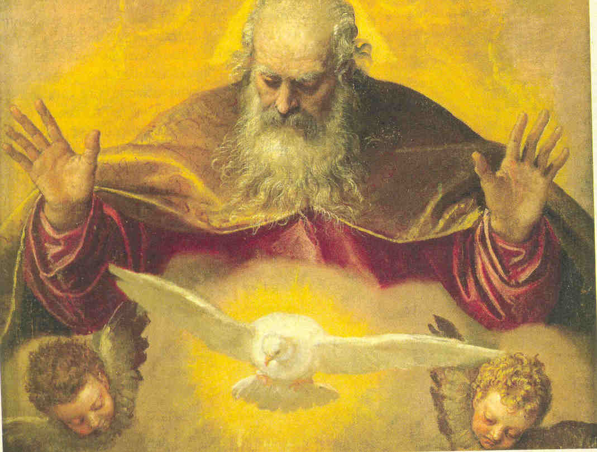
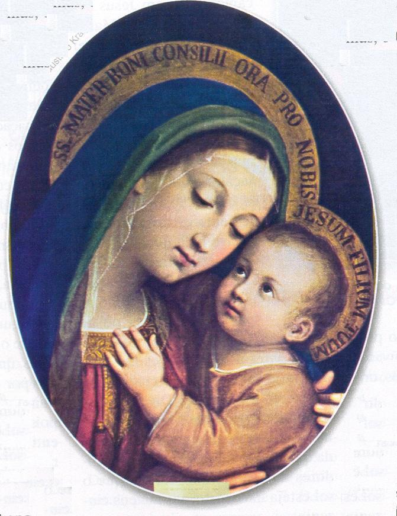

perdoada. Se alguém disser uma palavra contra o Filho do Homem
(JESUS CRISTO) lhe será perdoado, porém se disser
contra o ESPÍRITO SANTO, não lhe será perdoado, nem neste mundo e nem no futuro”.
(Mt 12, 31-32)
perdoada. Se alguém disser uma palavra contra o Filho do Homem
(JESUS CRISTO) lhe será perdoado, porém se disser
contra o ESPÍRITO SANTO, não lhe será perdoado, nem neste mundo e nem no futuro”.
(Mt 12, 31-32)
São Mateus no seu Evangelho coloca em evidência as palavras de JESUS sobre o Pecado Imperdoável contra o ESPÍRITO SANTO:
“Todo pecado e blasfêmia
serão perdoados aos homens, mas a blasfêmia contra o ESPÍRITO SANTO não será
perdoada. Se alguém disser uma palavra contra o Filho do Homem
(JESUS CRISTO) lhe será perdoado, porém se disser
contra o ESPÍRITO SANTO, não lhe será perdoado, nem neste mundo e nem no futuro”.
(Mt 12, 31-32)
Esta é uma das frases mais terríveis pronunciadas pelo Divino Salvador. Santo Agostinho chegou a dizer que “talvez, ao longo da Sagrada Escritura, não se encontre nenhuma questão maior, nenhuma que seja mais difícil”.(Sermão 71 – Verbis Domini)
Na verdade, sempre que na doutrina católica se apresenta uma questão difícil, podemos ter a certeza de que a solução será luminosa, e tanto mais brilhante e bela quanto mais difícil for à questão. É o que ocorre neste caso, em que o SENHOR coloca numa mesma frase duas afirmações que são aparentemente contraditórias: a primeira – que todos os pecados serão perdoados; a segunda – que o pecado contra o ESPÍRITO SANTO não tem perdão.
Santo Tomás de Aquino na “Suma Teológica” sintetizou as diversas soluções apresentadas e esclarece de modo consistente o problema teológico. A seguir, procurando deixar o assunto ao alcance de todos, resumiremos as considerações do Santo e Sábio, Doutor da Igreja.
Como consideração inicial, as transgressões chamadas de Pecados contra o ESPÍRITO SANTO, são aquelas cometidas por “pura malícia”, que ofende e repugna a bondade Divina, que se atribui ao ESPÍRITO DO SENHOR.
Os Pecados contra o ESPÍRITO SANTO são seis:
1) Desesperação da Salvação;
2) Presunção de se Salvar sem merecimento;
3) Negar a Verdade conhecida como tal;
4) Ter inveja das mercês (graças, virtudes e dons) que DEUS concede a outros;
5) Obstinação no Pecado.
6) Impenitência final.
São Tomás evidencia que a vontade pessoal se inclina ao mal de diversos modos:
a) Às vezes por defeito da razão, como aquele que peca por “ignorância”;
b) Às vezes por impulso do apetite sensitivo, como aquele que peca por “paixão”;
Mas nenhum destes dois casos significa pecar por “pura malícia”. Alguém só peca por “pura malícia” quando a própria vontade, consciente e com pleno raciocínio se volta para o mal.
Então, conforme define o Catecismo da Igreja Católica, os Pecados contra o ESPÍRITO SANTO “são aqueles cometidos por Pura Malícia”, não simplesmente por “ignorância” e “paixão”. Como este é um conceito fundamental para o perfeito conhecimento do assunto, vamos buscar deixá-lo bem acessível.
São Tomás escreveu em latim “certa malitia” que o Catecismo Oficial traduziu por “pura malícia” . O sentido da palavra “certa” indica aquilo que está perfeitamente decidido, resolvido e determinado no espírito de uma pessoa. Assim sendo, o Pecado cometido com “certa malitia” não é um pecado cometido por fraqueza, ignorância ou paixão, mas é um pecado cometido com plena e total adesão da vontade da pessoa, que lucidamente se inclina para o mal.
Como complemento, é importante mencionar, que São Tomás também explica sobre a ignorância, que em muitas ocasiões ela não está isenta do pecado, porque ela pode ser culposa, e neste caso teremos o chamado “Pecado por Ignorância”.
Desta maneira, fica bem definida a noção de “certa malitia”, a qual está presente nos seis Pecados que o Catecismo Oficial da Igreja enumera como sendo os Pecados contra o ESPÍRITO SANTO.
MALÍCIA DOS PECADOS

1º Pecado - “Desesperação da Salvação” e 2º Pecado - “Presunção de se Salvar sem merecimento”, São Tomás argumenta: A pessoa não quer pecar para não sofrer as consequências do Juízo Divino, o qual se exerce com justiça e misericórdia, e também pela “esperança” , que brota da consideração que a pessoa pode fazer da misericórdia Divina, que perdoa os pecados e premia as boas obras; ora, esta “esperança” é suprimida (eliminada) onde há “desesperação”. Por outro lado, a pessoa não quer pecar para não ofender a DEUS e pelo “temor” que nasce da consideração da Divina Justiça que pune os pecados; e este “temor” é suprimido (eliminado) pela “presunção” da salvação, quando alguém presume e acredita alcançar a glória sem mérito pessoal ou alcançar o perdão, sem a necessária penitência. Essa rejeição da justiça e misericórdia Divina implica numa “certa malitia”, pois são dois atributos Divinos que ninguém desconhece.
3º Pecado – “Negar a verdade
conhecida como tal” e 4º Pecado – “Ter inveja das mercês (graças,
virtudes e dons) que DEUS concede a outros”: Diz São Tomás: Dois são os dons de DEUS
que nos afastam do pecado: primeiro dom - é o
“conhecimento da Verdade”, contra o qual se coloca a “impugnação” (negação) da verdade
conhecida, por exemplo, quando alguém
“nega” a verdade conhecida para pecar livremente.
O segundo dom – é o auxílio da graça
interior, a qual se opõe a
inveja das mercês Divinas (das Graças doadas por DEUS), quando
alguém “inveja” não
só o irmão em sua pessoa, mas “inveja” também as graças que ele recebeu. Estes procedimentos definem a posição da alma,
revelando que nela existe a “pura malícia”.
5º Pecado – “Obstinação no Pecado” e 6º Pecado– “Impenitência Final”. São Tomás falou: Em relação ao pecado, duas são as coisas que podem afastar a pessoa de cometer uma transgressão. A primeira - é a “desordem interior” causada pelo mal praticado e a “torpeza da ação”, do mal em si, cuja consideração da pessoa numa reflexão, costuma induzi-la a “penitência” pelo pecado cometido. Contra isto se coloca a “impenitência” , ou seja, o propósito de “não se arrepender”. Aqui, não confundir: esta “impenitência” não significa permanecer no pecado até a morte, porque se assim fosse, não seria um “pecado especial” (cometido em algumas oportunidades), mas uma “transgressão sistemática”(ou seja, uma obstinação de pecar). A segunda – é a “inanidade” (é vazio, não deixa nada) assim como a “brevidade do bem” que se busca no pecado, segundo observa o Apóstolo São Paulo: “Que fruto colheu então daquelas coisas de que agora vos envergonhais”? (Rm 6, 21) E esta consideração costuma induzir a pessoa a não amarrar a sua vontade ao pecado. E quando isto não acontece, então predomina a “obstinação”, quando a pessoa firma o seu propósito de aderir permanentemente o pecado.
EM QUE SENTIDO SE DIZ QUE
ESTES
PECADOS SÃO IMPERDOÁVEIS
Seguindo a
explicação de São Tomás, há necessidade de mais um esclarecimento: o Pecado ou
Blasfêmia contra o 
Aqui já se começa a compreender que, no pecado contra o PAI (por fraqueza) ou contra o FILHO (por ignorância), o pecador se deixa conduzir mais facilmente ao arrependimento, e deste, ao pedido de perdão; enquanto o pecado contra o ESPÍRITO SANTO (por malícia) leva a obstinação no pecado, e, portanto, a recusa do perdão. Não é DEUS que não quer perdoar, é o pecador que não quer se arrepender e, consequentemente, não quer ser perdoado.
São Tomás compara o pecado contra o ESPÍRITO SANTO a uma doença incurável. “Uma enfermidade se diz incurável devido à natureza da doença, a qual inibe aquilo que poderia curá-la, seja porque destrói a capacidade de auto-regeneração da natureza, seja porque provoca náuseas do alimento ou do remédio, não permitindo a recuperação. Ora, DEUS pode curar este tipo de doença (como qualquer outra). Assim também o pecado contra o ESPÍRITO SANTO se diz irremissível segundo a sua natureza, porque exclui aquelas "coisas" pelas quais se faz a remissão do pecado (isto é: o arrependimento e o pedido de perdão). Porém isto não obstrui a Onipotência e a Misericórdia de DEUS, ou seja, a via do perdão e da cura, que somente o SENHOR pode utilizar, como algumas vezes ELE milagrosamente realiza curando as pessoas espiritualmente”.
Assim, DEUS manifesta a sua Onipotência Misericordiosa, convertendo o pecador como que à revelia da própria obstinação dele... Significa dizer, o SENHOR tem o poder Soberano de manifestar a Sua Vontade. Mas São Tomás observa que isso se dá em “raríssimas e especiais ocasiões”, dentro da Misericordiosa Justiça Divina. Assim sendo, no cumprimento da Lei de DEUS, prevalece à tese da irremissibilidade dos pecados contra o ESPÍRITO SANTO, segundo o texto de São Mateus que mencionamos no início desta exposição. E desse modo, a aparente contradição mostrada no texto, se resolve perfeitamente pela Absoluta Vontade do SENHOR.
A ANTIGUIDADE JÁ ABORDAVA ESTE TEMA
Aristóteles já classificava os pecadores em “ignorantes” (os que pecavam por ignorância), “incontinentes” (os que pecavam pela paixão) e “intemperantes” (os que pecavam por opção ou por malícia).
Quem peca por ignorância ignora, embora culposamente, ser mal aquilo que faz. Quem peca por paixão, sabe perfeitamente que aquilo que está fazendo é mau, mas não se apercebe momentaneamente da malícia do pecado, ofuscada pelo ímpeto culposo da paixão. Quem peca por opção ou malícia, nem ignora nem deixa de ter consciência de que é mau aquilo que está fazendo. Peca por cálculo, com premeditação e pleno conhecimento de causa, perseguindo o prazer do pecado, não por ter sido vencido pela tentação, mas porque o escolheu.
Então, como se observa, a noção de “malícia certa”, que é o fundamento da doutrina dos Pecados contra o ESPÍRITO SANTO, tem raízes ancoradas na filosofia grega, que a doutrina católica incorporou em sua teologia, objetivando iluminar sabiamente a humanidade.
DOUTRINA ATUALÍSSIMA EM NOSSOS DIAS
Num mundo que se afastou de DEUS por ignorância, movido pelas paixões ou por firme e decidida opção pelo mal (malícia certa), é sempre oportuno reavivar na memória e divulgar com plena disponibilidade a noção do pecado, a qual, como dizia o Papa Pio XII, o mundo havia perdido já em seu pontificado.
A mensagem que nossa MÃE SANTÍSSIMA trouxe em Fátima, em 1917, para os três pequenos pastores divulgá-las para o mundo, era precisamente um alerta para essa perda da noção do pecado, com a advertência de que, se a humanidade não se emendasse, grandes castigos se abateriam sobre todos.
Ninguém ousará dizer que, de lá para cá, a situação melhorou. Muito pelo contrário. Por outro lado, não é próprio da Providência Divina desalentar a humanidade em nenhuma circunstância. Embora triste e desapontado com o comportamento de seus filhos, o CRIADOR sofre em silêncio. Por isso mesmo, sobre as nuvens tenebrosas que pairam sobre o mundo, em consequência dos próprios desacertos das pessoas, cintila uma luz esplendorosa, mais brilhante que o sol: a promessa de NOSSA SENHORA, de que “No Fim” o SAGRADO CORAÇÃO DE JESUS E O IMACULADO CORAÇÃO DE MARIA vencerão e, o DIVINO ESPÍRITO SANTO, abafará definitivamente o rugido maléfico das blasfêmias, das maldades e de todo pecado, para júbilo do CRIADOR, alegria em toda população celeste e paz para toda humanidade.